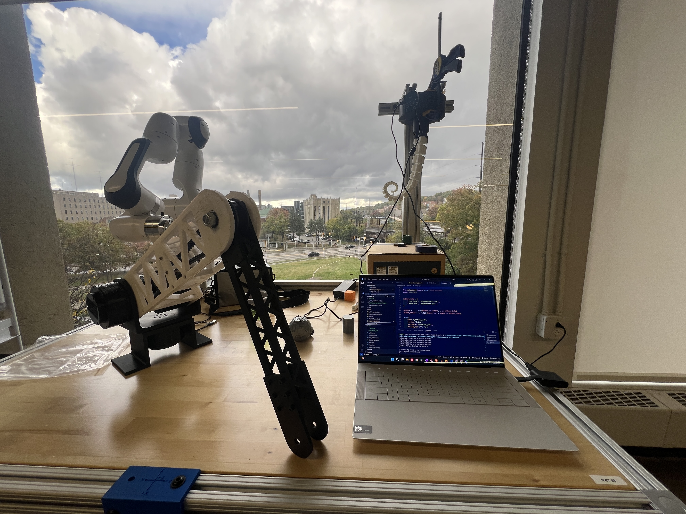

Ongoing
Research Assistantship - CyPhi Lab
The Cybernetics and Physical Intelligence Laboratory is a research lab at Case Western Reserve University that conducts research on a broad array of topics in robotics, intelligence, biomechanics, and dynamical systems theory.
View experience